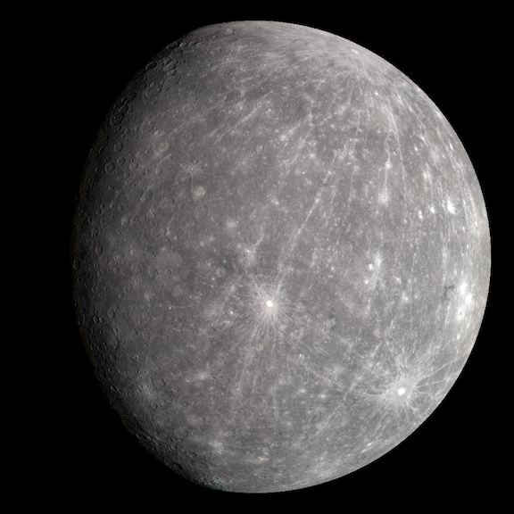
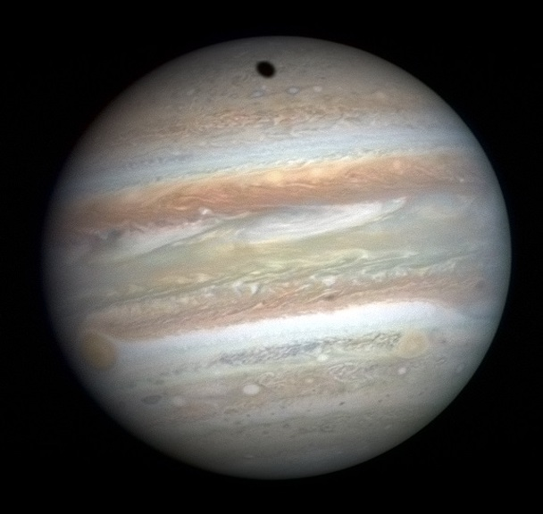
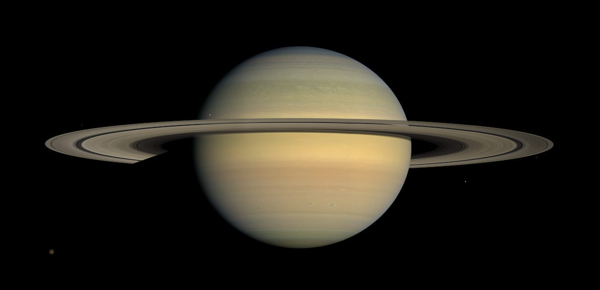
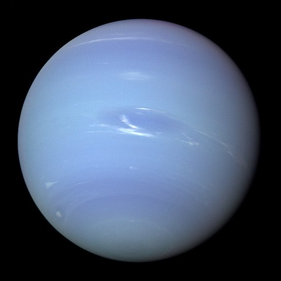

This page contains pictures, and some general facts of the planets Mercury, Jupiter, Saturn, and Neptune.
| Name: | Mercury | Jupiter | Saturn | Neptune |
|---|---|---|---|---|
| Images of Planets |  |  |  |  |
| Gravity (m/s2): | 3.7 | 23.1 | 9.0 | 11.0 |
| Mass(10^24 kg): | 0.33 | 1898 | 568 | 102 |
| Mean Temperature(C): | 167 | -110 | -140 | -200 |
| Diameter (km): | 4879 | 142,984 | 120,536 | 49,528 |
| Number of Moons: | 0 | 92 | 83 | 14 |
| Rotation Period (hours): | 1407.6 | 9.9 | 10.7 | 16.1 |
| Distance from Sun (10^6 km): | 57.9 | 778.5 | 1432.0 | 4515.0 |